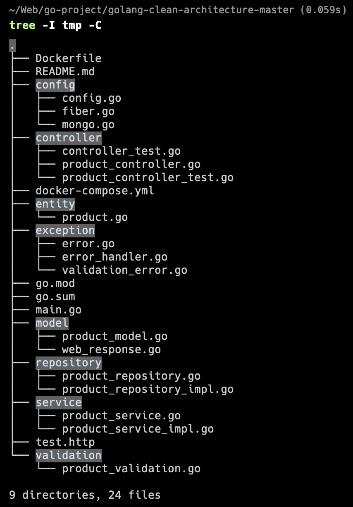

Command Overview
tree -I tmp -Ctree: This is a command-line utility that displays the contents of a directory in a tree-like format.-I tmp: This option is used to exclude a specific pattern or directory from the tree view. In this case, it excludes any directories or files with the name "tmp."-C: This option is used to colorize the output, making it more visually appealing by using different colors for different types of files.

Installation
Install tree command using Homebrew:
brew install treeCommon Options
| Option | Description |
|---|---|
-a |
Show all files (including hidden) |
-d |
List directories only |
-L n |
Limit depth to n levels |
-f |
Print full path prefix |
Use Cases
- Project structure documentation
- Directory navigation
- File system exploration
- Project organization
Example Commands
# Show only directories
tree -d
# Limit depth to 2 levels
tree -L 2
# Exclude multiple patterns
tree -I 'node_modules|tmp|cache'
# Show with file size
tree -shTips
- Use patterns to exclude unwanted directories
- Combine options for specific needs
- Redirect output to file for documentation
- Use color output for better visibility